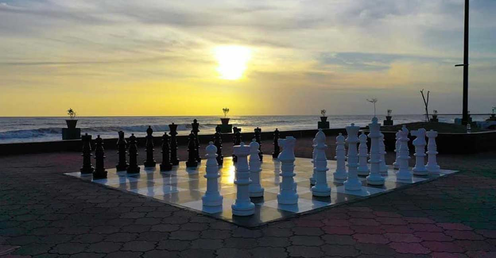

Beypore
Beypore , an ancient port town in Kozhikode formerly called as Vaypura / Vadaparappanad. The famous ruler of Mysore , Tipu Sultan, named the town "Sultan Pattanam".Beypore port was historically famous for trading with the Middle East. It is one of the oldest ports in Kerala. (br) The place is also popular for building wooden ships, called as dhows in Malyalam, usually bought by Arab merchants for trading purposes but now used as tourist ships. It is also said that Sumerian ships might have been built in Beypore.

Kozhikode Beach
Famous for its sunsets, Kozhikode Beach commemorates the beauty of the colonial era with its lighthouse and two dilapidated piers which are more than 100 years old.